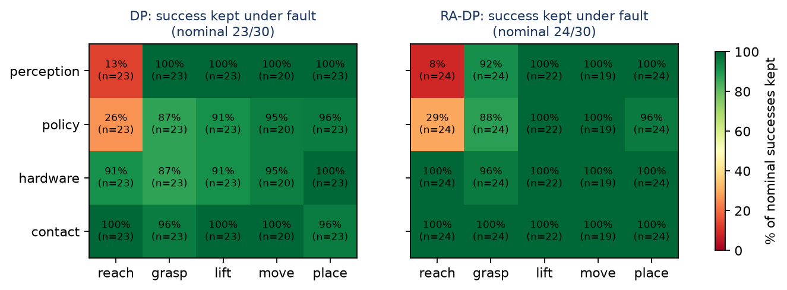

For teams that build manipulator robots
Your robot dropped the cup. Was it the camera, the policy, the motors or the cup?
Every failure of a manipulator robot comes from one of four sources, and it can start in any of five phases of the task. Each source needs a different fix. Sending every failure back to annotation and retraining only fixes one of the four.
This page explains why the four sources are hard to separate, shows them with examples in every phase, uses results from a re-implementation of the RA-DP paper (Ye, Yang, Jin, Li and Rasouli, IROS 2025) to show one way to separate them, and proposes how to separate the one source that paper cannot: perception.
1
The four sources of a failure
At every moment, the robot's loop passes through four steps. Any one of them can break.
1. Perception
The robot's picture of the world is wrong. What it sees is not what is there.
- Example
- The camera mount moved 3 mm after a bump. The robot now sees the cup 3 cm to the left of where it really is, and closes the gripper on air.
- Typical causes
- Calibration drift, glare, transparent or shiny objects, the arm blocking the camera, depth noise.
- In the log
- The policy's action is sensible for what it saw. Only an independent view of the cup shows the error.
- Right fix
- Recalibrate the camera, or fine-tune the perception model on real images. Not new demonstrations.
2. Policy
The robot saw the world correctly but chose the wrong action.
- Example
- The cup is in a corner of the table where no training demo started. The policy approaches from an odd angle and knocks the cup over.
- Typical causes
- States not covered by training data, small early errors that push the arm somewhere unfamiliar, opening the gripper too early.
- In the log
- The observation is clean, but a planner given the same observation would have acted differently.
- Right fix
- New demonstrations or corrections at these states, then retraining. This is the only category retraining is meant for.
3. Hardware
The right command was sent, but the arm did not do it.
- Example
- A warm gripper servo delivers 60% of the commanded force. The grip is too weak and the cup slides out.
- Typical causes
- Servo latency, backlash, torque limits, overheating, gains different from the simulator.
- In the log
- Commanded and measured joint positions drift apart; the motor current sits at its limit.
- Right fix
- Maintenance, an actuator model or latency compensation. Retraining the policy cannot add torque to a motor.
4. Contact physics
The arm did what was asked, but the object behaved differently from what the policy expected.
- Example
- The cup is wet, or full of water and twice as heavy as during training. The same grip that worked yesterday slips today.
- Typical causes
- Friction, mass, centre of mass, soft or deformable objects, worn gripper pads.
- In the log
- Force and motion match the command, yet the object slips, tips or rotates.
- Right fix
- New gripper pads, a measured friction and mass range in simulation, or a grip-force rule. Sometimes extra data helps; often it does not.
2
The five phases of a pick-and-place task
A failure has two times: the phase where it starts and the phase where it is seen. They are often different.
- ReachThe arm moves to the object.
- GraspThe gripper closes on it.
- LiftThe object leaves the table.
- MoveThe object is carried to the target.
- PlaceThe object is put down and released.
3
Every category in every phase: 20 examples
Picking up a cup and placing it on a shelf. Each cell is where the fault starts; the italic line is where a person watching the video would see it.
| Starts as | Reach | Grasp | Lift | Move | Place |
|---|---|---|---|---|---|
| Perception | Camera drift: cup seen 3 cm to the left. Seen at Grasp: gripper closes on air. | Glare hides the handle; a poor grasp point is chosen. Seen at Lift: cup tilts and slips. | The arm blocks the camera; the robot thinks the cup is still on the table and re-grasps. Seen at Lift: jerky motion, cup knocked. | A glass on the path is invisible to depth. Seen at Move: collision. | Shelf height wrong by 1 cm. Seen at Place: cup dropped from above, or pushed into the shelf. |
| Policy | Unfamiliar start pose; the arm approaches from the side. Seen at Grasp: cup knocked over. | Gripper closes too early. Seen at Lift: empty gripper. | Lifts before the grip settles. Seen at Move: cup slides out. | Cluttered path never seen in training; passes too close to a box. Seen at Move: collision. | Opens the gripper before the cup touches the shelf. Seen at Place: cup tips over. |
| Hardware | 40 ms servo delay; the arm overshoots and nudges the cup. Seen at Grasp: off-centre grip. | Gripper motor at a lower torque limit. Seen at Move: cup slides out. | Shoulder joint saturates under load; the arm sags. Seen at Lift: cup hits the table edge. | Wrist backlash; the cup swings. Seen at Move: spill or drop. | Encoder drift; placed 1 cm off. Seen at Place: cup on the shelf edge falls. |
| Contact | Cup lighter than in training; a finger brushes it and it slides away. Seen at Grasp: nothing to grasp. | Wet cup; the fingers slide. Seen at Lift: cup stays behind. | Cup full of water, twice the mass. Seen at Lift or Move: slips out. | Water shifts the centre of mass; the cup rotates in the grip. Seen at Move: drop. | Slippery shelf mat. Seen at Place: cup slides and tips on release. |
Look down any column of italic lines: the same few symptoms appear again and again. "Cup slides out during Move" appears in three different rows. A video alone does not say which row you are in.
4
Why the four are hard to separate
One symptom, four different stories. Here is the same failure, a cup sliding out of the gripper during Move, caused four different ways.
At Grasp, the camera put the grasp point 2 cm off-centre. The off-centre grip twists the cup until it slips during Move.
At Grasp, the policy learned to close the gripper only partly. The grip is too loose for the carry.
The command was a full grip, but a hot servo delivered 60% of the force.
The grip was correct and strong, but today the cup is wet and heavier.
On video, all four look identical. An annotator watching the clip has no way to tell them apart, so a label like "bad grasp, collect more demos" is a guess three times out of four.
- Same symptom, different causes. A drop, a miss or a collision can come from any of the four categories, as the table above shows.
- Delayed symptoms. A fault that starts at Reach or Grasp is often only visible at Lift or Move. The phase where you see it is the wrong place to look.
- Mixed causes. A little camera noise plus a policy that is not robust to noise: fixing either one would have saved the run. Forcing a single label hides this.
- The real world cannot be rewound. The test you want, "would it have worked if only the camera had been right?", cannot be run on the real robot after the fact.
- The truth is not in the log. The robot logs what it saw, not where the cup really was. Without an independent measurement, a perception error is invisible: the log looks like a policy that made a strange choice.
5
Why retraining on all the failure data will not work
The common response to failures is to label them, collect more demonstrations and retrain the policy. That only works for one category.
| Category | Does retraining the policy fix it? | What goes wrong if you retrain anyway | The fix it actually needs |
|---|---|---|---|
| Perception | No | The policy learns to aim off-target to make up for a miscalibrated camera. It breaks again once the camera is fixed, or on the next robot. | Recalibrate, or fine-tune the perception model on real images. |
| Policy | Yes | Nothing; this is what retraining is for. | Demonstrations or corrections at the failing states, then retraining. |
| Hardware | No | More demonstrations cannot add torque or remove latency. Effort goes into the wrong place while the arm keeps degrading. | Maintenance, an actuator model in the simulator, or latency compensation. |
| Contact | Sometimes | Helps only if the training data covers the new friction or mass. Often a hardware change (pads) or a grip-force rule is faster and cheaper. | Measured friction and mass ranges in simulation, new pads, a grip-force rule. |
Today
- Every failure clip goes to a person to watch and label.
- Labels are guesses, because the cause is not visible.
- All failures go into retraining, including those retraining cannot fix.
- The same perception or hardware failures come back after the new model ships.
With diagnosis first
- Each failure is labelled automatically with a category, the phase where it started, and the evidence.
- Only policy failures go to annotation and retraining.
- Perception, hardware and contact failures go straight to the engineer who can fix them, with no labelling hours spent.
- The share of failures per category tells you where the next engineering week should go.
6
Evidence: what the RA-DP results show
RA-DP (Rapid Adaptive Diffusion Policy, IROS 2025) replans at every control step instead of running a chunk of actions blind. I re-implemented it from the paper and tested it against faults of each category, switched on during one phase at a time.

| Fault (DP / RA-DP) | Reach | Grasp | Lift | Move | Place |
|---|---|---|---|---|---|
| Perception object seen 3 cm off | 13 / 8 | 100 / 92 | 100 / 100 | 100 / 100 | 100 / 100 |
| Policy noisy actions | 26 / 29 | 87 / 88 | 91 / 100 | 95 / 100 | 96 / 96 |
| Hardware 4-step lag, half motion | 91 / 100 | 87 / 96 | 91 / 100 | 95 / 100 | 100 / 100 |
| Contact friction ×0.05, mass ×5 | 100 / 100 | 96 / 100 | 100 / 100 | 100 / 100 | 96 / 100 |
One way to separate the categories: the replanning test
Fast replanning corrects execution errors. When the arm lags or moves less than commanded, RA-DP sees the result at the next step and corrects it. It never fell below 96% under hardware faults, while plain DP fell to 87–91%.
Fast replanning cannot correct wrong inputs or wrong decisions. With a perception fault at Reach, both policies fell to about 10%: they replan perfectly, towards the wrong place.
This gives a diagnostic test. Replay a failed episode in simulation with a fast-replanning policy. If it recovers, the cause was in execution (hardware). If it does not, the cause was before the command: perception or policy.
What this test cannot separate
The perception result is also the most damaging one: a 3 cm error during Reach removed about 90% of successes, and no policy improvement helped. This is exactly the case where a company would retrain on more data and see no gain.
7
The proposal: diagnose, then fix
A set of tests, each built to answer one question, with a vision-language model (VLM) as the reasoning engine that combines them into one diagnosis.
| Test | The question it answers | How | Points to | Status |
|---|---|---|---|---|
| A. Tracking check | Did the arm do what it was told? | Compare commanded and measured joints; look for delay, current at its limit, temperature. | Hardware | Simple rule on existing logs |
| B. Replanning test | Would correcting every step have saved it? | Replay the episode in a calibrated simulation copy (a "digital twin") with an RA-DP-style policy. | Recovers → Hardware; fails → perception or policy | Shown in simulation (section 6) |
| C. Perception check | Was what the robot saw wrong? | Compare the robot's estimate with an independent one, and replay with the estimate corrected (section 8). | Perception | Proposed: new direction |
| D. Same-observation planner | With the same view, was a better action possible? | A planner that sees exactly what the policy saw. If it succeeds, the policy was at fault. If it also fails, the view itself was not good enough. | Succeeds → Policy; fails → Perception | Proposed |
| E. Contact replay | Would normal friction and mass have saved it? | Replay in the twin with the object's friction and mass set back to normal values. | Contact | Proposed |
Why a VLM as the reasoning engine
No single test is enough, and the results can disagree. A vision-language model reads the video keyframes, the robot logs as text, and the result of each test, then writes the diagnosis: the category, the phase where the fault started, the phase where it was seen, and a short explanation an engineer can check. When the causes are mixed it says so, and when the twin cannot reproduce the episode it answers "unexplained" instead of guessing.
The VLM can be trained without human-written explanations. In simulation and with deliberately injected faults the true cause is known, so the reward is simply whether its answer matches (reinforcement learning with verifiable rewards). Once trained, it can give a first diagnosis from the video and logs alone, and the slower replay tests are run only when it is unsure.
The earlier version of this work found root causes in robot logs with causal discovery (PCMCI+): 87% correct on 270 simulated Go2 incidents. That method finds which signal went wrong first. The VLM version adds which part of the robot it belongs to, which is what decides the fix.
8
New research direction: separating perception
The replanning test cannot tell perception from policy. The main reason is in reason 5 above: the log records what the robot saw, never where the object really was. So the plan is to measure that second thing.
Signal 1: a second opinion
An independent estimate of where the object really is.
- How
- A second calibrated camera, a fiducial tag during testing, or the robot's own body: when the fingers touch the cup, the joint angles say where the cup is, without any camera.
- Decision
- If the robot's estimate and the independent one disagree by more than a set margin before the failure, perception is a suspect.
Signal 2: corrected replay
Would it have worked if the robot had seen correctly?
- How
- Replay the episode in the twin, feeding the policy the corrected object pose from the moment the disagreement starts.
- Decision
- If the corrected replay succeeds and the original replay fails, the failure is labelled perception, with the phase where it started.
Signal 3: same-view planner
Separates "saw wrong" from "chose wrong".
- How
- A planner sees only the policy's own (possibly wrong) view and plans with the twin's physics.
- Decision
- If the planner succeeds, a good action existed for that view: policy. If it fails too, the view itself was the problem: perception.
Signal 4: how sure the camera is
A calibrated uncertainty on every pose estimate.
- How
- Conformal prediction gives each object pose an error bound with a stated coverage, learned from a small calibration set.
- Decision
- Failures that follow a wide bound (glare, occlusion, transparent objects) are flagged as likely perception, before any replay is run.
Early evidence that this matters
- In the RA-DP tests, a 3 cm perception error during Reach removed about 90% of successes, and fast replanning did not help.
- In the same re-implementation, a simulated colour-plus-depth camera located obstacles within 3–7 mm when they were in clear view. When the arm blocked the view, the estimate shrank and shifted by 2–3 cm. That is a real perception gap that appears only in some phases, which is exactly what makes it hard to find from video.
How it would be tested
On a low-cost real arm, each category is injected on purpose in each phase: shift or smear the camera (perception), unusual start poses (policy), lower the servo torque limit or add delay (hardware), tape the fingertips or add hidden mass (contact). Because the cause is known, the diagnosis can be scored on real failures, not only in simulation, as accuracy over the 20 category-by-phase classes.
9
What exists today, and what is next
| Part | Status |
|---|---|
| RA-DP re-implementation | Done, in simulation. Results close to the paper (static obstacle: 71.7% vs the paper's 63.3%; about 10× faster replanning than plain DP). |
| 4 categories × 5 phases fault tests | Done in MetaWorld simulation (section 6). The contact fault needs a stronger test. |
| Root-cause finder from logs (PCMCI+) | Done in simulation on a Go2 robot: 87% correct on 270 incidents. |
| VLM reasoning engine | In progress. |
| Perception separation (section 8) | Proposed. Next step. |
| Real-robot validation with injected faults | Planned. |
References
- X. Ye, R. H. Yang, J. Jin, Y. Li, A. Rasouli. RA-DP: Rapid Adaptive Diffusion Policy for Training-Free High-frequency Robotics Replanning. IROS 2025, arXiv:2503.04051. (Independently re-implemented here; no official code was released.)
- P. Huang et al. What Went Wrong? Closing the Sim-to-Real Gap via Differentiable Causal Discovery. CoRL 2023.
- Z. Liu, A. Bahety, S. Song. REFLECT: Summarizing Robot Experiences for Failure Explanation and Correction. CoRL 2023.
- J. Duan et al. AHA: A Vision-Language-Model for Detecting and Reasoning over Failures in Robotic Manipulation. 2024.
- J. Runge. Discovering contemporaneous and lagged causal relations in autocorrelated nonlinear time series datasets (PCMCI+). UAI 2020.
- J. Pearl. Causality: Models, Reasoning and Inference, 2nd ed. Cambridge University Press, 2009.